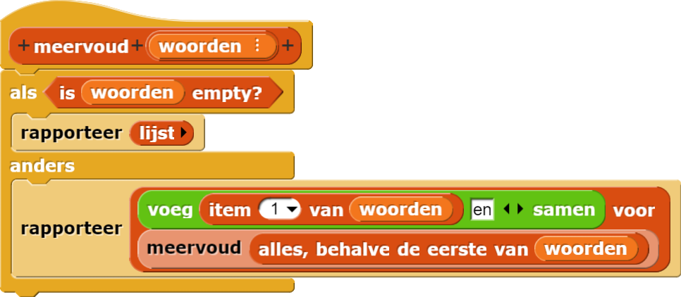
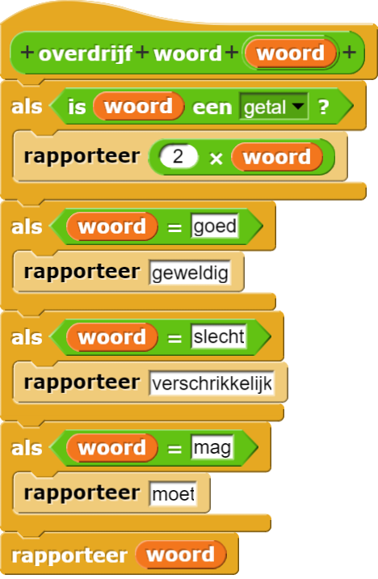
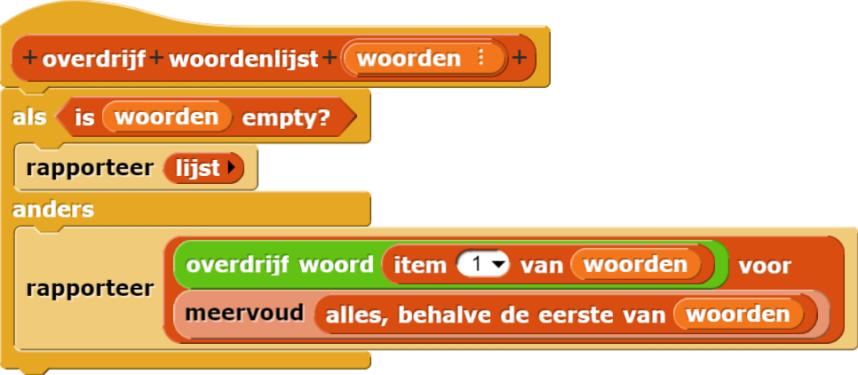
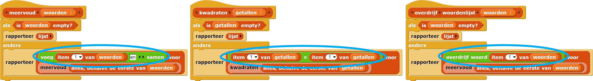
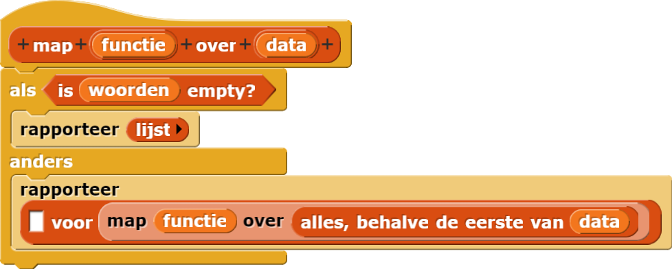
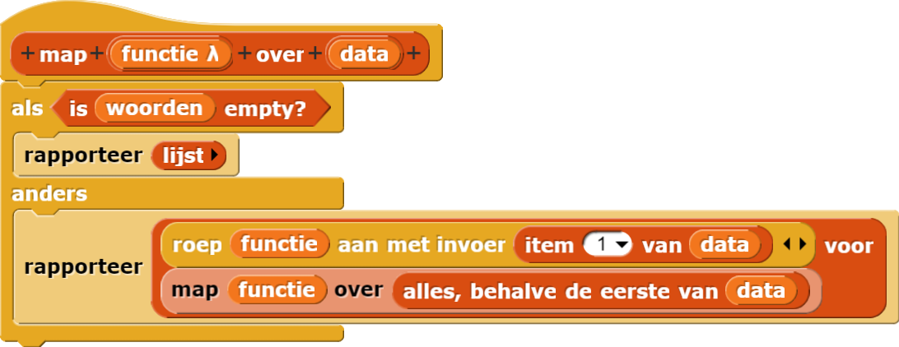
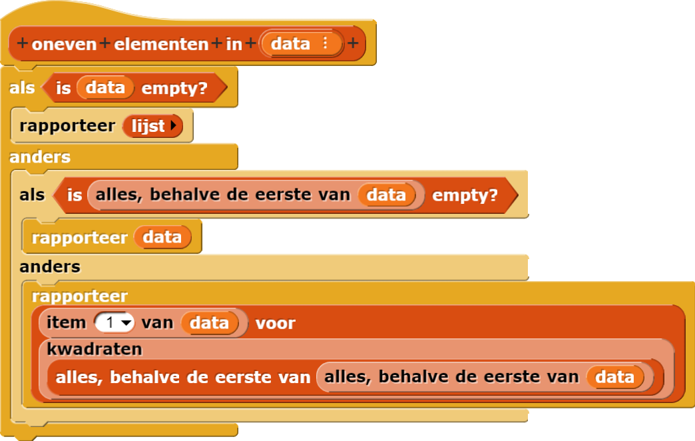
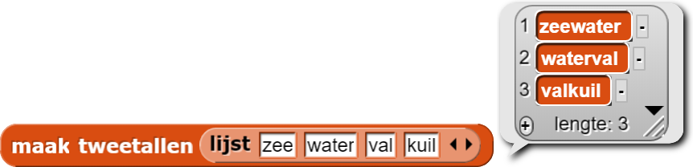

Het Map Patroon Generaliseren
Hieronder is een manier om de blokken van de vorige pagina te maken.

overdrijf woordblok ziet er misschien heel anders uit maar hier is een manier:



meervoud, kwadraten en overdrijf woordenlijst zijn bijna
identiek:

Het enige verschil is het omcirkelde deel hierboven: de functie die wordt uitgevoerd op item 1
van de invoerlijst. Hier is een generalisatie van dit patroon:

Maar wat stoppen we in het eerste invoervak van voor ?
Er zijn twee kleine details die je moet weten om deze definitie af te maken. Het eerste detail is dat de
invoer voor functie een rapporteur moet zijn. Je weet al hoe je de invoer een specifiek type
moet maken. Het werkt op dezelfde manier:

De Griekse letter λ die in het blok verschijnt naast functie herinnert je eraan dat functie
als invoertype een rapporteur heeft. Net zoals dat ︙ zegt dat data een lijst is.
Nu moet je alleen nog maar weten hoe je de functie uitvoert op item 1 van data. Vind het
roep aanblok in het Besturenmenu en klik op het zwarte pijltje om het een tweede invoervak te
geven. Vul het dan zo in:

Het is af! Je hebt nu het mapblok gemaakt, een functie van hogere orde!
Het roep aanblok vindt lege invoervakken in de functie-invoer en vult ze met de gegeven
invoerwaardes.
- Bouw het
overdrijfblok opnieuw metmap. Wat moet je met de hulpfuncties doen? -
Soms kom je een probleem tegen dat niet precies het
mappatroon volgt, maar het lijkt er wel heel erg op. In dat geval kan jemapniet gebruiken, maar het helpt je nog steeds dat je hetmappatroon begrijpt. Een voorbeeld:

Vul de lege vakken in: Dit script is net zoals het map patroon behalve __ (het basisgeval) en __ (de recursieve aanroep).Dit script is net zoals het map patroon behalve het basisgeval en de recursieve aanroep. - Bouw het
koppelblok:
